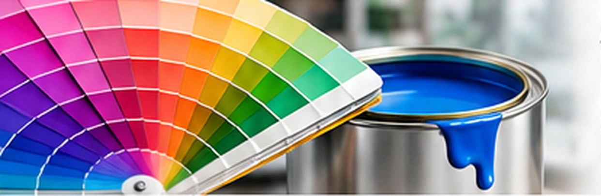

Sistema tintométrico
Master Mix.
O sistema tintométrico Master Mix da Mastercolor permite a preparação de mais de mil opções de cores e a produção de pequenas quantidades no ponto de venda, segundo a apresentação institucional da indústria.
Uma solução que amplia as possibilidades para consumidores, pintores e revendedores.
Solicitar informaçõesSeu projeto, sua paleta.
Variedade de cores
Mais de mil opções informadas pela empresa para diferentes projetos.
Personalização
Preparação de tonalidades segundo a disponibilidade no ponto de venda.
Projetos únicos
Cores para valorizar os ambientes e expressar diferentes estilos.